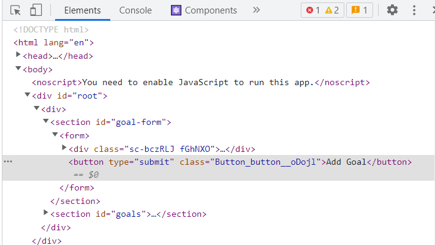

Using CSS Modules
在前一章節，我們介紹了透過 styled-components 將 CSS 限制在 Component 內的方式，無論你喜不喜歡這個方式，它成功解決了 global style 的問題，並擁有許多擁護者，但好消息是，如果你不喜歡這個方式，React 提供了另一個稱為 CSS Module 的方式來解決這個問題，如果是透過 create-react-app 建立專案，這個方式甚至已經內建在專案內了，接下來讓我們透過 CSS Module 來改寫相同的範例。
在實作上，這兩個方式有一個很大的差異是，CSS Module 並不會像 styled-components 將所有 CSS 寫到 JS 內，而是照舊將 CSS 和 JS 區分為兩個檔案，只是在檔名和導入方式上有所差異
檔名
如果是透過 CSS Module 的方式建立 Scoped CSS，在檔名上就要在中間加上 module，並以 . 隔開
1 | Button.css -> Button.module.css |
導入方式
在導入方式上，原先只是單純 import CSS 檔案，但這個方式需要將 CSS 檔案作為一個 object 導入
1 | import './Button.css'; |
導入後，所有 class name 將透過這個 object 取得
1 | const Button = props => { |
Class Name
透過以上這些步驟，就已經達到我們的目的了，進一步打開 devtools Element 會看到，class name 的命名方式和 styled-components 不太一樣，並非單純產生 unique ID，而是透過以下命名方式
1 | ${Component Name}_${Class Name}__${unique ID} |

Dynamic Styles
同樣的，我們繼續透過 CSS Module 來改寫另一個動態改變 style 的 Component ; 在改變 CSS 檔名和導入方式後，一樣可以透過 CSS object 取得 class name，就如同原生 JS 一樣，如果是一個包含 - 的 key，會改以 [] 取得屬性
1 | return ( |
在寫法上其實和使用 CSS Module 前大同小異，同理，也可以透過相同的方式加上判斷
1 | return ( |
Media Queries
因為 CSS Module 並沒有去改動 css 檔案內容，所以在使用 Media Queries 來區分各種裝置解析度時，寫法上就照舊採用原生 CSS 的方式
1 | /* Button.module.css */ |
總結
介紹了 styled-components 和 CSS Module 這兩種方式都可以得到 CSS Scpoed 的目的，在使用上完全是依照個人和團隊喜好來決定，喜歡透過 JS 一路寫到底的則可以選擇 styled-components，如果還是習慣將 CSS & JS 做區分的則可以選擇 CSS Module。
資料參考
React - The Complete Guide (Incl Hooks, React Router, Redux)
CSS Module